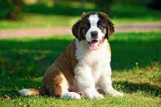
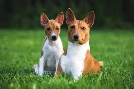
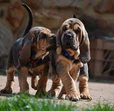

Puppies:
Puppies (juvenile dogs) can weigh 1-1.5 kgs (1-3 lb)
while larger ones can weight about 7-11 kgs (15-23 lb)
When they are born, puppies spend most of their time
sleeping, and the rest of their time feeding.
If a litter (group of puppies) exceeds six puppies,
particular if 1 or more are 'runts', human intervention
in hand-feeding the stronger puppies is needed such that
the runts get proper nourishment & attention from the mom
A Fun Fact: The best (and easiest time) to domesticate a
dog is when they are a young puppy.



Source:
https://en.wikipedia.org/wiki/Puppy